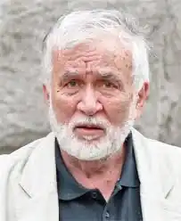

Любомир Спиридонов Левчій (болг. Любомир Спиридонов Левчій, 27 квітня 1935 Троян, Болгарія) — болгарський поет, прозаїк. Дійсний член Європейської академії мистецтва, науки і культури (Париж, Франція). Удостоєний багатьох міжнародних нагород, у тому числі золотої медалі Французької академії за поезію і почесного звання Лицаря поезії (1985).
Любомир Левчій народився в 1935 році в місті Троян. Вірші почав писати рано. Його перша книга "Зірки належать мені" ( "Зірка са мої") вийшла в 1957 році. Закінчив філософсько-історичний факультет Софійського університету. У 1961-1971 роках працював редактором, головним редактором газети "Література фронт". Був першим заступником міністра культури Народної Республіки Болгарія. Потім — головою Союзу болгарських письменників. З 1991 року — власник і головний редактор видавничого дому та міжнародного журналу "Орфей".
Любомир Левчій нагороджений багатьма літературними преміями на батьківщині і за кордоном. серед них: медаль Асоціації венесуельських письменників (1985), премія "Мате Залки" і "Бориса Польового" (1986), велика нагорода інституту імені Пушкіна і Сорбони (1989), Золотий Вінець (2010). У 2006 році Любомир Левчій був нагороджений орденом "Стара Планіна" першого ступеня за "виключно великі заслуги перед Болгарією, за розвиток і популяризацію болгарського мистецтва і культури". У своїх книгах "Зірки мої" (1957), "Стрільбище" (1971), "Щоденник для спалення" (1973), "Самосуд" (1975), "Лук" (1983) та ін. Левчій піднімав цивільні, політичні та моральні проблеми. У 2012 році російською мовою вийшла його автобіографічна книга "Ти наступний", в якій поет розповів історію своєї молодості, приходу в літературу, а потім і у владу.